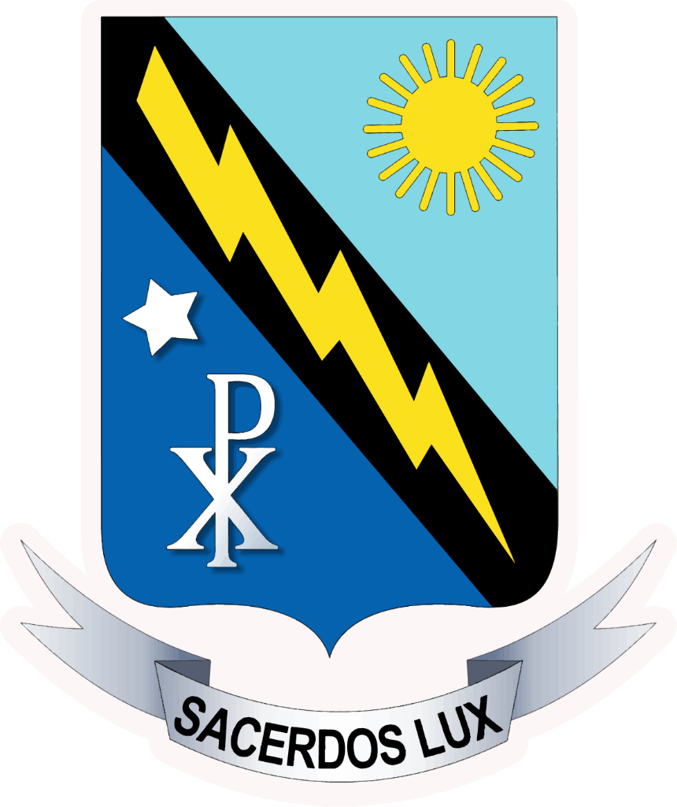
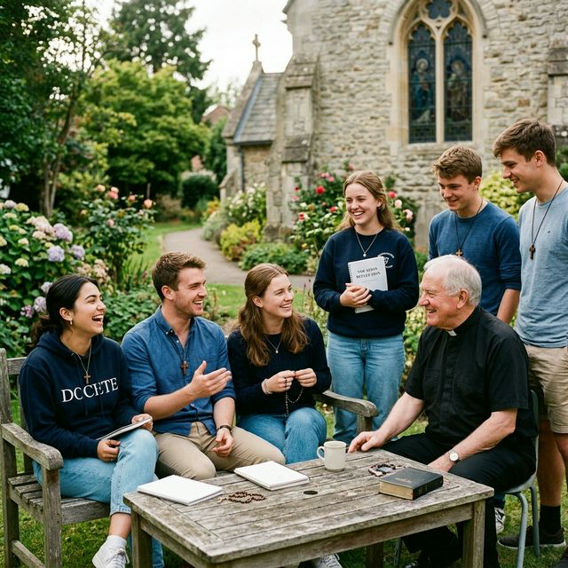

Seminario Santo Tomás de Aquino
«La mies es mucha y los obreros pocos» (Mt 9, 37)
Formando a los futuros pastores y sacerdotes de nuestra Iglesia local.

Seminario Mayor "Santo Tomás de Aquino"
El Seminario Mayor Arquidiocesano "Santo Tomás de Aquino" fue fundado el 1 de octubre de 1983. Desde entonces, ha sido el corazón de nuestra diócesis, el lugar donde se forman pastoral, espiritual e intelectualmente los futuros sacerdotes encargados de guiar al pueblo zuliano.
La etapa del Seminario Mayor comprende los estudios y años de discipulado (filosofía) y configuración (teología), preparando integralmente a los candidatos al Orden Sagrado.
Seminario Propedéutico
El Propedéutico constituye la etapa inicial y fundamental indispensable para quienes sienten el llamado de Dios. Es un período de preparación humana y cristiana orientado a discernir la vocación al sacerdocio ministerial.
Durante este año introductorio, los jóvenes consolidan su fe, nivelan sus conocimientos académicos y se inician en la dinámica comunitaria del seminario antes de pasar a la etapa formativa del Mayor.
"El seminario es el tiempo de la intimidad con el Maestro para aprender a ser pastores con olor a oveja."
Pastoral Vocacional
«La mies es mucha y los obreros pocos» (Mt 9, 37). Nuestra Pastoral Vocacional Arquidiocesana (PVA) se encarga de animar, acompañar y orientar a los jóvenes en su proceso de discernimiento vocacional hacia la vida sacerdotal, religiosa o laical consagrada.
Si sientes que el Señor te llama a entregar tu vida por la Iglesia y los hermanos, no dudes en acercarte. Realizamos convivencias, retiros y encuentros vocacionales parroquiales mensuales a lo largo del año.
Acompañamiento
Encuentros mensuales y retiros para escuchar la voz del Señor.

Apoya la formación sacerdotal
Tu generosidad permite que nuestros seminaristas continúen sus estudios y preparación para servir a nuestras parroquias.
Donar Ahora